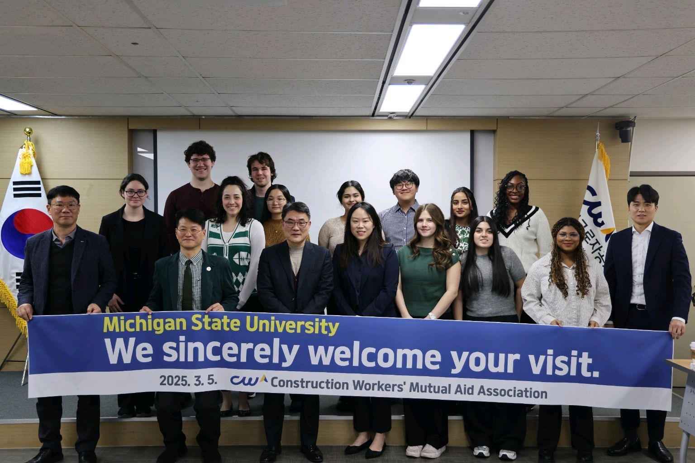

I'm a labor scholar and an assistant professor at the School of Human Resources and Labor Relations at Michigan State University. My research examines how changes in work and organizations affect workers — their pay, voice, well-being, and power in the workplace. I study three interconnected issues: the rise of algorithmic management and digital technologies in the workplace; the growth of outsourcing and multi-layered labor contracting arrangements; and shifting employer skill demands and worker job preferences. I use both quantitative and qualitative methods, drawing on proprietary firm-level datasets, original surveys, interviews, field experiments, and restricted U.S. Census data.
I received my PhD from MIT Sloan School of Management with the Institute for Work and Employment Research (IWER) and worked as a Postdoctoral Fellow and an Economist at the Center for Economic and Policy Research (CEPR).
My research has been funded by the National Science Foundation, Russell Sage Foundation, and Alfred P. Sloan Foundation and appeared in The Wall Street Journal, The New York Times, The Atlantic, Vox, CBS News, MIT Technology Review, and cited in a U.S. Senate briefing, among others.
Alongside my academic research, I write for policy and practitioner audiences on issues of work, inequality, and labor market policy. Below is a selection of this work, much of it produced during my time at the Center for Economic and Policy Research (CEPR), which has been widely cited in national media and by policymakers.
Teaching is central to how I think about my work as a scholar. I believe learning happens through dialogue — when students feel invited to bring their own questions, experiences, and disagreements into the room. My goal is to create that kind of space in every course.

Students on the study abroad trip to South Korea, Spring 2025.